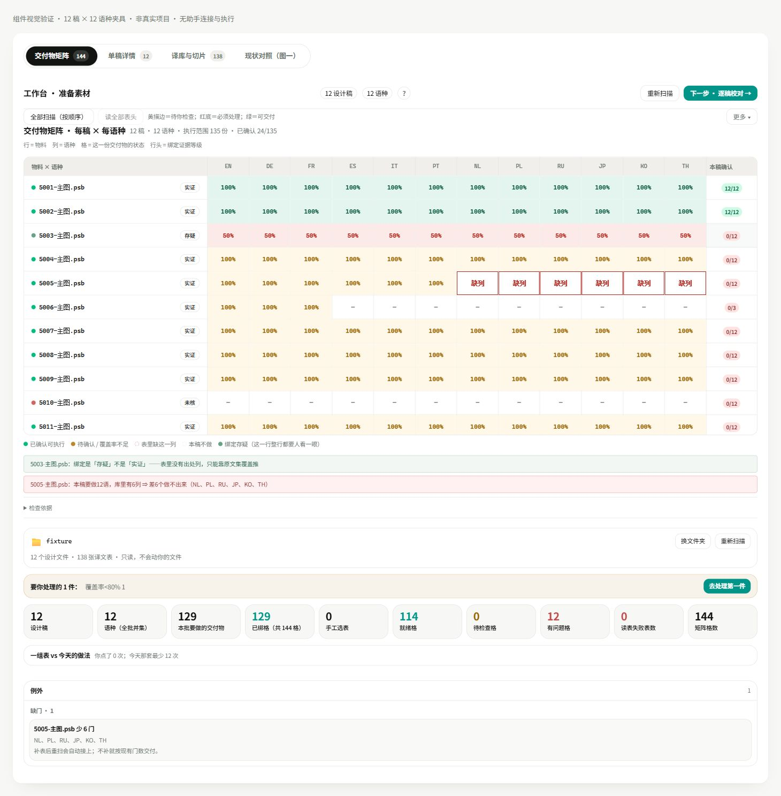
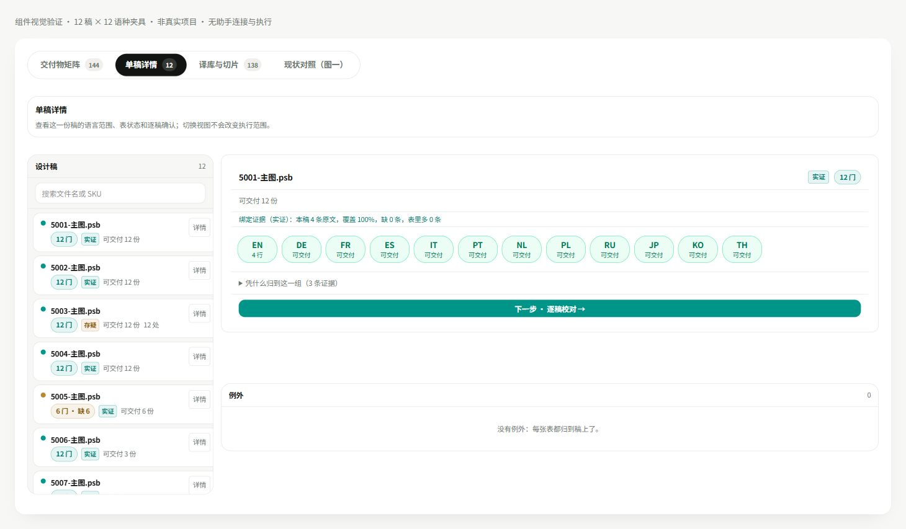
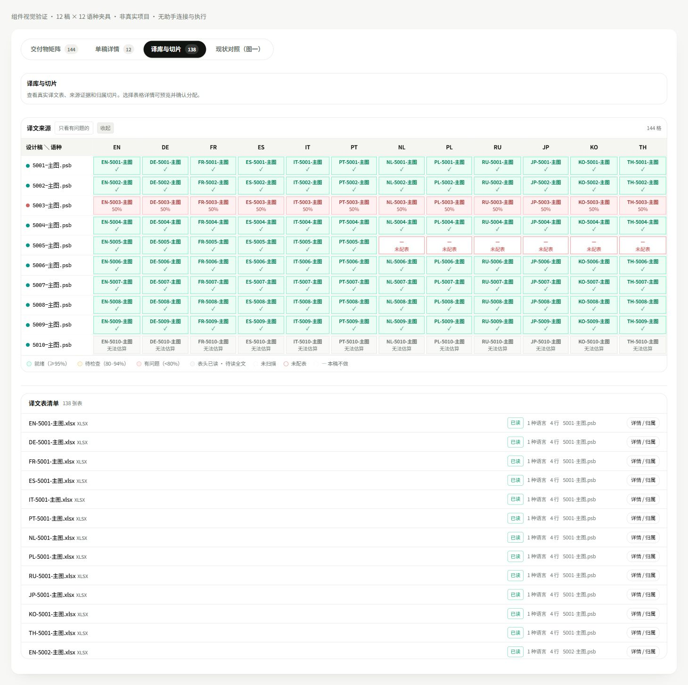
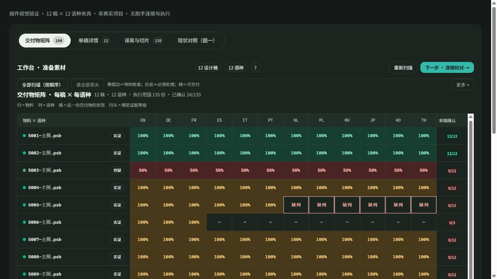
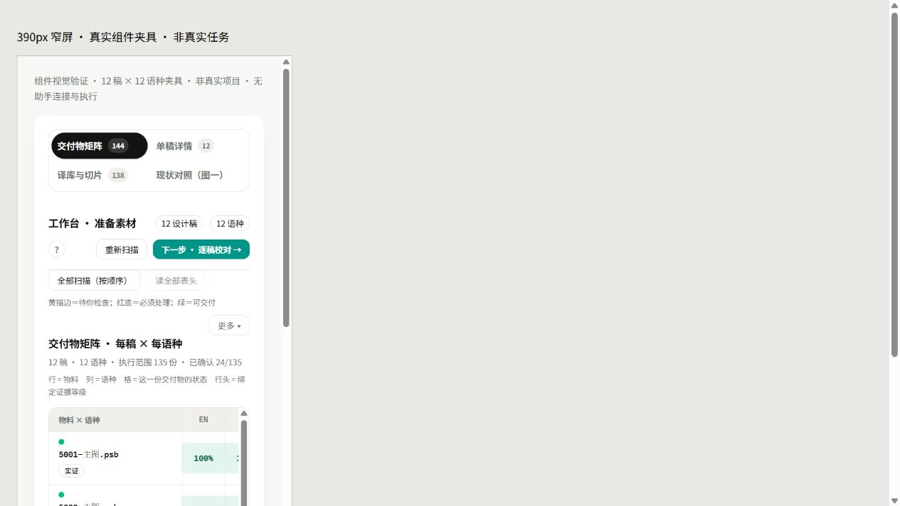
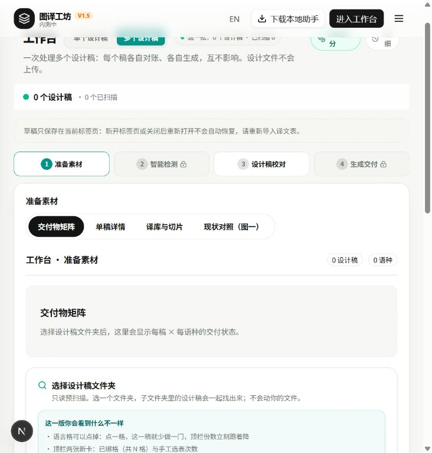

59/59定向组件测试
144浏览器渲染矩阵格
0独立复核阻断项
结论：本地多稿工作台本轮视觉改版已实现，页面使用宽工作区、横向阶段栏、四视图胶囊导航和优先展示的交付矩阵。现在可以在真实本地入口看到新空态；有数据时使用同一套真实组件展示矩阵、单稿详情和译库。
这对你意味着什么：刷新 localhost:3000 的工作台，选择“多个设计稿”即可看到新布局。没有文件夹时，四个视图也可切换。载入批次后矩阵排在准备信息前面，不必先越过整屏统计卡。
本轮实际改了什么
- 多稿最大内容宽度从原来的窄容器调整到 1460px，四阶段导航改为横排，为十二语种矩阵留空间。单稿继续使用原容器。出处：worktrees/develop/src/components/workbench/workbench-view.tsx:4869、:5176。
- 将交付矩阵移到文件夹、进度、统计和对比信息之前，操作仍在原回调上。出处：worktrees/develop/src/components/workbench/step1-stage-view.tsx:1609、:1625。
- 采用参考稿的暖灰底、白色纸面、青绿色操作色、圆角和紧凑矩阵；表头与行头固定，状态保持六态，保留横向和纵向滚动。出处：worktrees/develop/src/components/workbench/batch-workspace.css:1；coverage-matrix.tsx:177、:222。
- 单稿详情改成 300px 稿件栏与右侧详情，语言按钮紧凑排列；译文表清单设为有限高度滚动，全部条目和详情操作仍在。出处：step1-stage-view.tsx:1128、:1944；batch-workspace.css:138。
- 增加真实空态四视图，切换时不卸载文件夹输入，不自动读取路径。出处：worktrees/develop/src/components/workbench/batch-workspace-empty.tsx:7；workbench-view.tsx:5325。
独立复核
只读审查按本轮开工字节副本比较，返回 CLEAN，实际阻断问题 0 条。核对了矩阵回调、hidden 容器、单稿样式作用域、授权门和滚动入口。开始时 HEAD 为 442a7aab；并行会话随后将 HEAD 推进到 518a2dae，本轮未提交、未重置或覆盖并行改动。字节副本：tmp/workbench-visual-20261029-root/。
原 Luna 执行代理本轮遇到服务连接 403；视觉补丁与浏览器核验由主线程接手完成，未把代理的失败写成完成证据。
实际验证
- npx tsc --noEmit：rc=0。
- 两个定向测试文件：59/59 通过，包含四视图和空态输入保留；视图切换不调用范围、保存或阶段回调。
- 工作台 UI 合同：rc=0。模拟稿静态合同：107 项、失败 0；脚本原有推迟项仍保留标注。
- 用户可见文案检查：49 条通过。定向 ESLint：0 errors，既有警告保留。git diff --check：rc=0。
- 真实 localhost:3000 工作台：已看到新空态四视图；Enter 键进入单稿详情后可返回交付矩阵；没有读取素材路径或操作 PSD。
- 12 稿 × 12 语言的真实 Step1StageView 组件夹具：浏览器实际渲染 144 格。六态分布为已确认24、待确认81、覆盖不足12、缺列6、不参与9、未核实12；点 5001/EN 打开了对应稿与语言的详情；四个视图均已实际切换。
- 使用同一组件夹具检查了宽屏、深色模式和 390px iframe 窄屏，截图落在本报告同目录的“证据_20261029_多稿UI视觉对齐/”。这些是组件与布局证据，不是 Photoshop 实批结果。夹具服务只绑定本机，测试后关闭。
交付边界
本轮完成本地界面改版；真实项目满批扫描、切片配置后生成 PSD 的完整业务验收仍待进行。没有部署测试站或生产，也没有改服务端授权、计费、范围或结算语义。
原参考 HTML 的浏览器截图被本机浏览器 URL 策略拒绝，本轮依据已读取的 HTML 结构和 CSS 对齐，并检查实际实现截图，没有做像素差分比较，也没有通过其他地址重发该文件来绕过限制。
控制面日检 rc=1：已有在办超限、历史到期项及飞书回读密钥错误，未在本 UI 任务里修改这些记录。CURRENT_STATUS 属于单写者现状文件，本轮保持原文，通过现状投递指针登记结果。
台账投影预演：内部 rc=1，原因是本机 DPoP 签名密钥不可用；受保护请求未发送，未进行实际投影，也未使用降级凭据。Markdown 报告按指定机器人另行发送。
记录时间：2026-10-29 09:51（Asia/Singapore）。
本地视觉证据
矩阵_12x12_夹具.png

单稿详情_夹具.png

译库与切片_夹具.png

深色矩阵_夹具.png

窄屏390_夹具.png

真实入口_空态.png
